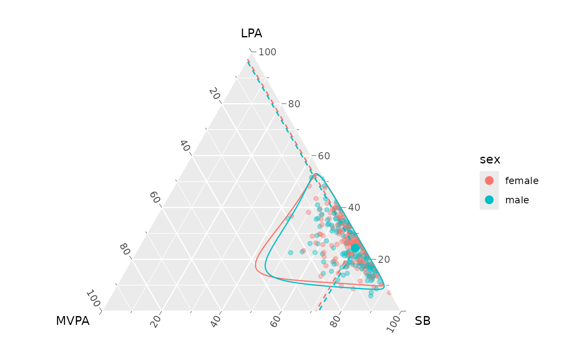
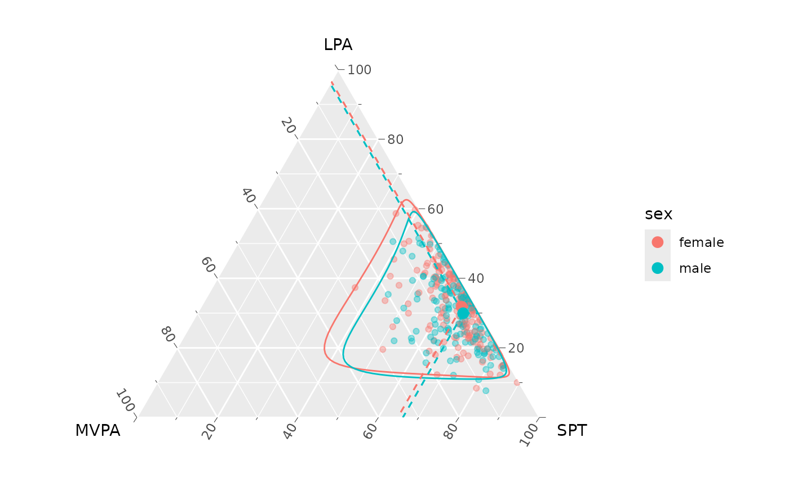
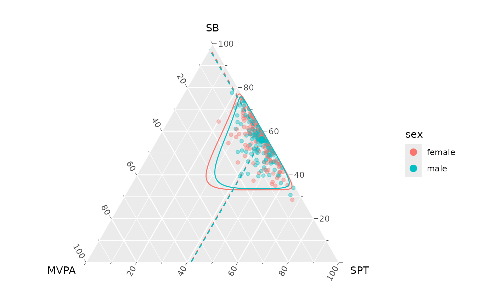
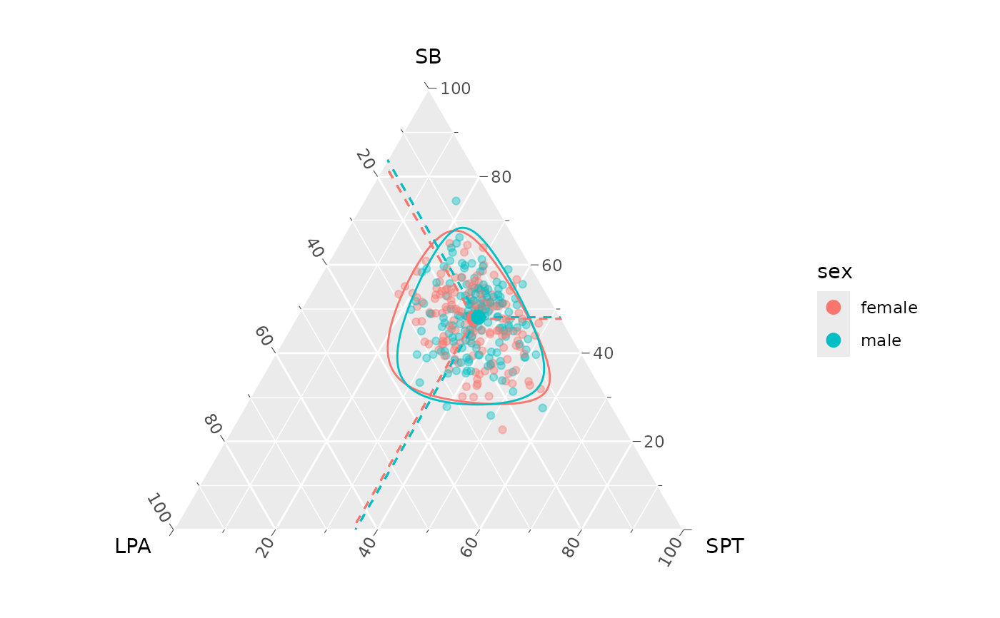
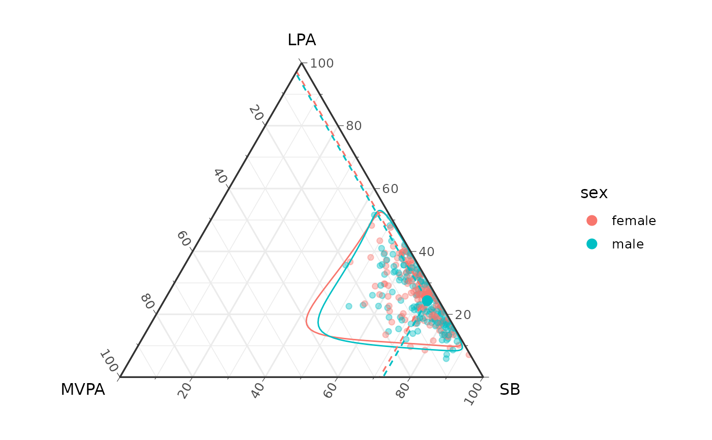
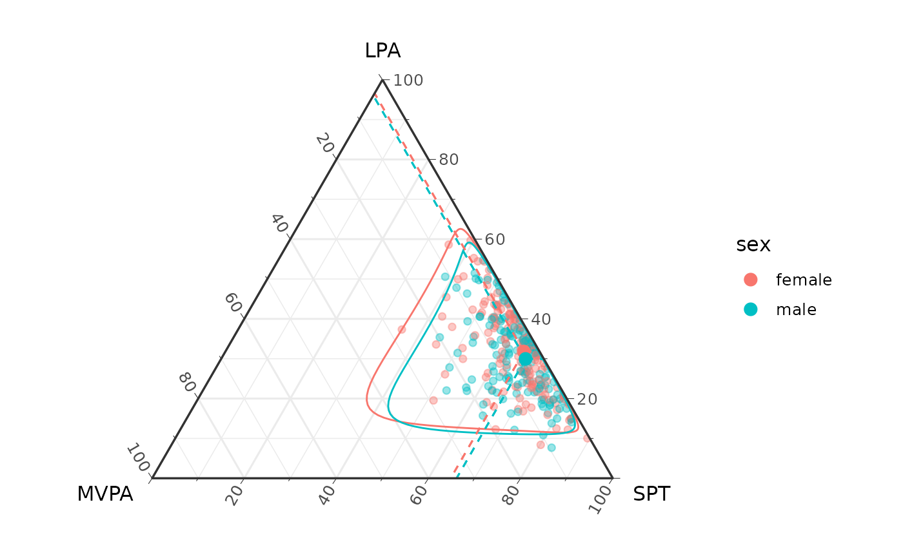
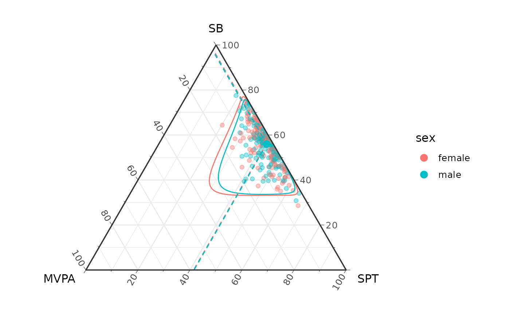
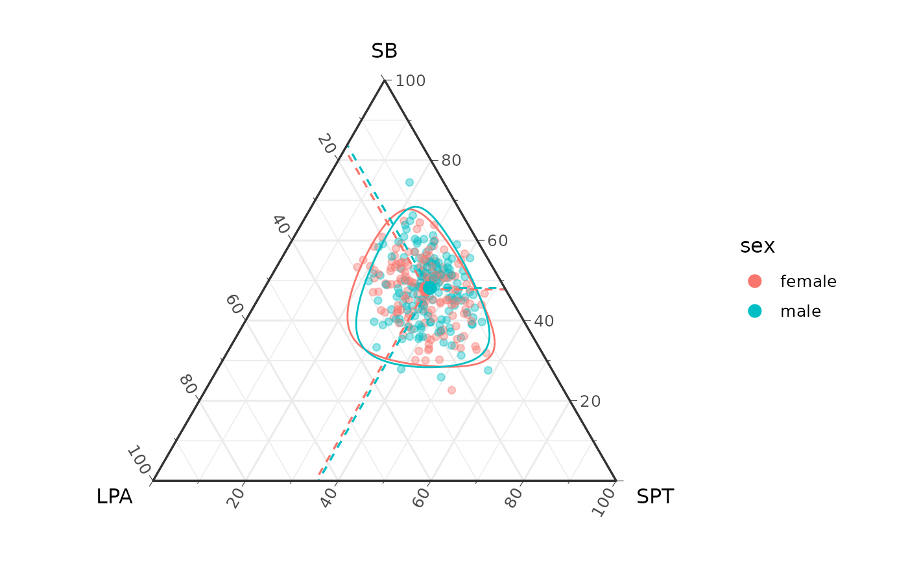

Draws ternary (three-part) plots of a time-use composition via ggtern,
one panel per triplet of parts (choose(D, 3) panels for a D-part
composition). Group colouring, group-mean points, crosshairs at the group
means and confidence regions are optional.
Usage
plot_ternary(
x,
group = NULL,
mean_points = TRUE,
crosshairs = TRUE,
conf_level = 0.95,
theme = NULL
)Arguments
- x
A
compDobject fromdeclare_composition(). The ternary coordinates are always the object's closed (imputed) composition. A long part label is drawn in full where the figure has room beside the triangle. In a small figure it can run past the edge. A shorter label or a larger figure keeps it inside.- group
Optional name of a column of the data originally given to
declare_composition(), used to colour the points and to compute per-group means.- mean_points
Add the group (or overall) closed geometric mean as points.
- crosshairs
Add crosshairs at the mean composition(s).
- conf_level
One or more confidence levels, each drawn as a
geom_confidence_tern()region; setNULLto omit them.- theme
Optional
ggterntheme added to every panel (e.g.,ggtern::theme_bw()). DefaultNULLkeeps theggterndefault. Complete themes includetheme_bw(),theme_light(),theme_dark(),theme_minimal(),theme_classic(),theme_void(),theme_rgbw(),theme_rgbg(),theme_bluelight()andtheme_tropical(). Add-on themes such astheme_hidegrid(),theme_showarrows(),theme_noticks()ortheme_latex()can be combined with them by+(e.g.,ggtern::theme_bw() + ggtern::theme_hidegrid()). All are documented in theggternpackage; browse them withhelp(package = "ggtern")(functions whose names start withtheme_) or read?ggtern::theme_bw.
Value
Invisibly, a single ggtern/ggplot object when there is one
triplet, otherwise a named list of them (names like "MVPA.LPA.SB"). The
call draws the plot(s) as a side effect.
See also
declare_composition() for the composition object;
plot.compD(), which delegates to this function.
Other visualization:
plot_variation()
Examples
# \donttest{
cd <- declare_composition(timeuse, c("MVPA", "LPA", "SB", "SPT"),
closure = 1440)
plot_ternary(cd, group = "sex")




plot_ternary(cd, group = "sex", theme = ggtern::theme_bw())




# }